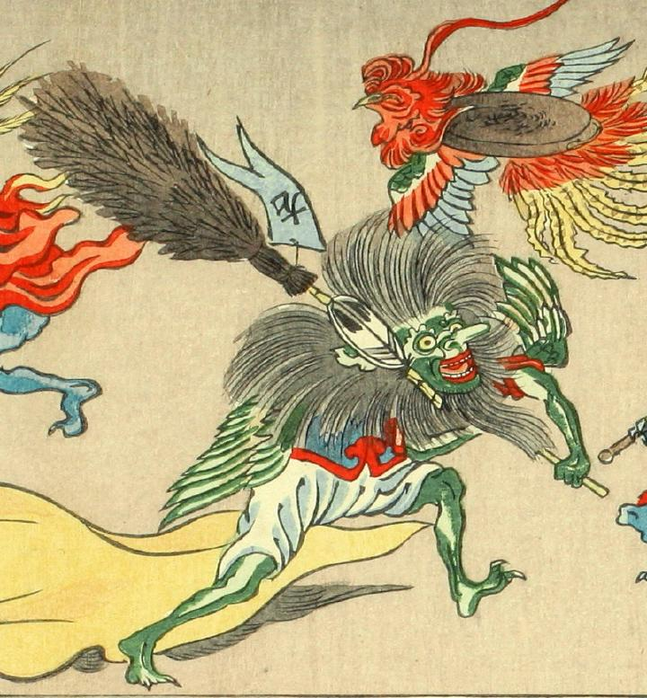

箒をかついだ化物。全身緑色で、背に翼を生やしている。箒には「左」と書かれた旗がついている。鼻が長く突き出ていて、顔の周りに長い毛が生えている。天狗のようにも見える。中国風の衣装を身につけている。
著作者：洒落斎芳幾（歌川芳幾）／出典：親書誌：U426_nichibunken_0075：滑稽倭日史記；コッケイヤマトシキ／日付：2007／資源識別子：U426_nichibunken_0075_0014_0000
Copyright (c)2010- International Research Center for Japanese Studies, Kyoto, Japan. All rights reserved.